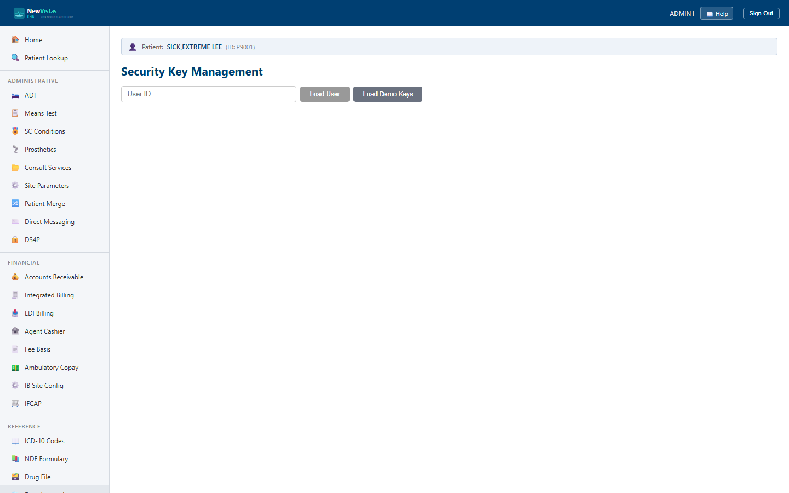

Manual › Administrator › Security Keys
Security Key Management
Security keys are the access-control primitive behind every role in
NewVistas. From this page you look up a user, see the keys they hold,
grant or revoke keys, review a full audit log of every change, and end an
active session. It's the equivalent of VistA's XUSER key
allocation.
Look up a user
- In the sidebar, under the system-administration items, click Security Keys (or go to
/security-keys). - In the User ID field, type the user's ID (e.g.
DOCTOR1). - Click Load User (or press Enter) to load that user's keys, audit log, and session.

What a key actually controls
A security key does two things at once. It drives menu
visibility — the role-scoped sidebar only shows the areas the
user's keys grant — and it gates grain-level
actions: the workflow grains check the caller's keys before
performing a protected operation (for example,
CanMergePatients
is required to run a patient merge). Removing a key both hides the menu
and blocks the underlying action.
What a user without a key sees
Access control fails gracefully — a user who lacks a key never hits a raw error:
- Where a whole page is key-gated (for example Mental Health, which needs
YS MH INSTRUMENT), the menu item is hidden for users without the key. - For an action they can't perform (for example adding a problem without
GMPL PROBLEM), the app shows a clear notice naming the required key — "You don't have permission for this action — it needs the 'GMPL PROBLEM' security key" — instead of an error.
Which key does each page need?
As a rule of thumb: a Provider can place orders, prescribe, write & sign notes,
and record vitals, allergies and problems. Beyond that, scheduling needs
SD SCHEDULING, ADT needs DG ADMIT, lab
collection/verification need LRLAB/LRVERIFY, Mental Health
needs YS MH INSTRUMENT, and cosigning a note needs TIU COSIGN.
The three tabs
- Security Keys — the keys this user currently holds, with each key's category and a Revoke button.
- Grant Key — the catalog of available keys (filterable by category), each marked HELD or grantable.
- Key Audit Log — every grant and revoke, with the date/time, action, key, who performed it, and the reason.
Grant a key
- Load the user, then open the Grant Key tab.
- Optionally narrow the list with the Category Filter (e.g. CPRS, Clinical, Pharmacy, Lab, ADT, System).
- Find the key and click Grant. Keys the user already holds are shown as HELD with no Grant button.
- The change is recorded in the audit log and the user's key count updates immediately.
Revoke a key
- On the Security Keys tab, find the key in the user's list.
- Click Revoke. The key is removed and the action is logged.
Sessions
Above the tabs, a banner shows whether the user has an active session. When active, it lists the start time, device, IP address, and timeout. To force the user out — for example after a credential reset — click End Session.
Tip
Click Load Demo Keys to grant the loaded user a standard
starter set (ORES, PROVIDER, LRLAB, DGADMIT) so you have keys to revoke
and audit while exploring.